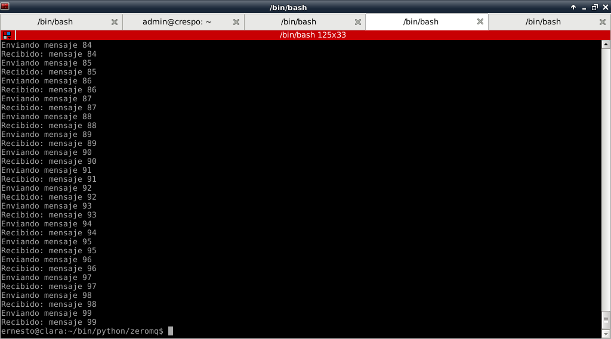

Tutorial de ZeroMQ con Python. Parte 2.
Posted on dom 27 mayo 2012 in Tutorial Python • 2 min read
Continuando con los artículos sobre ZeroMQ, en esta ocasión se muestra el uso del patrón de mensaje PAR (comunicación entre compañeros exclusivamente).
Los artículos se basan en el artículo de Nicholas Piël, una Introducción a ZeroMQ.
Socket par son muy similares a los sockets regulares. La comunicación es bidireccional, no hay un específico estado almacenado dentro del socket y solamente se puede conectar con un compañero.
La figura representa la estructura de sockets pares, el servidor escucha en un puerto seguro y un cliente se conecta a el. Las líneas rojas muestran el flujo de los mensajes, en este patrón ambos extremos usan el patrón par, y los mensajes fluyen de manera bidireccional.

Se muestra a continuación el código del servidor:
#!/usr/bin/env python
#Importar zmq
import zmq
#Se crea la instancia del contexto
context = zmq.Context()
#Se crea el socket del tipo PAR
socket = context.socket(zmq.PAIR)
#Se asocia a una IP y puerto donde escucha el servidor.
socket.bind("tcp://127.0.0.1:5555")
#Se crea un ciclo.
while True:
#Se recibe un mensaje del cliente
mensaje = socket.recv()
#Se muestra en pantalla
print "Recivo", mensaje
#Se envia de vuelta el mensaje
socket.send(mensaje)
El código del cliente es el siguiente:
1 2 3 4 5 6 7 8 9 10 11 12 13 14 15 16 17 18 19 20 21 | #!/usr/bin/env python
#Se importa zmq
import zmq
#Se crea la instancia del contexto
context = zmq.Context()
#Se crea el socket con argumento del tipo de mensaje Par.
socket = context.socket(zmq.PAIR)
#Se conecta al servidor dado la IP y puerto.
socket.connect("tcp://127.0.0.1:5555")
#Se crea un cilo de 100 repeticiones.
for i in range(100):
#Se define el mensaje a pasar
mensaje = "mensaje %s" % i
#Se pasa el mensaje al servidor
socket.send(mensaje)
#Se presenta en pantalla el mensaje
print "Enviando", mensaje
#Se recibe el mensaje de vuelta
msg_in = socket.recv()
#Se presenta en pantalla el mensaje de vuelta
print "Recibido:", msg_in
|
El resultado del lado del servidor se muestra en la siguiente figura:

El resultado del lado del cliente se muestra en la siguiente figura:

Al intentar ejecutar 2 clientes al mismo tiempo el servidor termina con un mensaje de error por que sólo maneja una comunicación bidireccional con un sólo compañero.
¡Haz tu donativo! Si te gustó el artículo puedes realizar un donativo con Bitcoin (BTC) usando la billetera digital de tu preferencia a la siguiente dirección: 17MtNybhdkA9GV3UNS6BTwPcuhjXoPrSzV
O Escaneando el código QR desde la billetera: